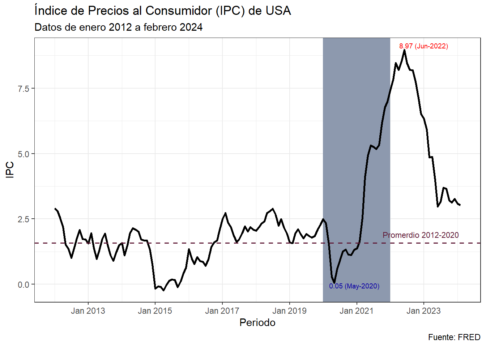

getSymbols(
Symbols = "USACPALTT01CTGYM",
src = "FRED",
from = "2012-01-01",
to = "2024-02-01",
format = "xts",
periodicity = "monthly"
)[1] "USACPALTT01CTGYM"Cuando iniciamos a trabajar con R, es común que analicemos datos en formatos Excel que descargamos en nuestro ordenador. Con el paso del tiempo, esta tarea se convierte en una rutina que puede volverse tediosa, especialmente cuando lidiamos con grandes cantidades de datos que ralentizan el procesamiento y consumen una cantidad considerable de memoria de nuestra computadora.
Imagina la posibilidad de descargar bases de datos de forma remota, seleccionando únicamente los datos necesarios para tu análisis y evitando cargar información que no te interese. Para hacer esto, el paquete quantmod proporciona una función llamada getSymbols, que permite la descarga de datos desde páginas web.
Al utilizar getSymbols, puedes simplificar y automatizar el proceso de adquisición de datos, lo que te brinda la flexibilidad de trabajar con conjuntos de datos sin comprometer el rendimiento de tu computadora. Esta función te libera de la carga de descargar manualmente archivos y te permite concentrarte en el análisis y la interpretación de los datos relevantes para tu investigación o proyecto.
Paquetes: quantmod tidyverse zoo gt
Esta función necesita algunas información esenciales de la data que se necesita descargar, como el símbolo de los datos y el nombre de la pagina donde se encuentra la data.
En esta caso vamos a descargar los datos del Índice de Precios al Consumidor de Estados Unidos desde la página principal de la Federal Reserve Economic Data, con los siguientes parámetros:
getSymbols(
Symbols = "USACPALTT01CTGYM",
src = "FRED",
from = "2012-01-01",
to = "2024-02-01",
format = "xts",
periodicity = "monthly"
)[1] "USACPALTT01CTGYM"Dependiendo de la pagina que vayas a descargar pueden variar la estructura de la función, pueden consultar con ?getSymbols().
Lo primero que tenemos es el Symbols, este especifica el identificador del conjunto de datos que deseamos obtener. En este caso, USACPALTT01CTGYMUSACPALTT01CTGYM se refiere a los Índices de precios al consumidor (IPC, IPCA), COICOP 1999: Índice de precios al consumidor: Total para Estados Unidos en unidades de contribución a la tasa de crecimiento, en 1 año, sin desestacionalizar. Estos identificadores lo podemos encontrar al lado del nombre cuando visitamos la página principal de la FRED. Especificamos la fuente con src, en este caso, “FRED”. Luego, definimos el rango de fechas con from y to, que indican el periodo de tiempo que deseamos descargar. Por último, especificamos el formato de los datos con format y la periodicidad con periodicity.
Por defecto el conjunto de datos que descargamos se guardara con el nombre del símbolo que utilizamos, algunas informaciones de la data descargada se pueden ver con el siguiente código:
dplyr::glimpse(USACPALTT01CTGYM)An xts object on 2012-01-01 / 2024-02-01 containing:
Data: double [146, 1]
Columns: USACPALTT01CTGYM
Index: Date [146] (TZ: "UTC")
xts Attributes:
$ src : chr "FRED"
$ updated: POSIXct[1:1], format: "2025-04-22 22:40:46"Vamos hacer algunos ajuste para que nuestro conjunto de datos sea más amigables1 para las visualizaciones y luego pasamos a calcular algunas estadísticas descriptivas de los datos descargados.
ipc_usa <- zoo::fortify.zoo(# Convertimos a data.frame
USACPALTT01CTGYM) |>
setNames(# asignamos nombres fácil de identificar
c("periodo", "ipc")) |>
mutate(across(ipc, ~round(.x, digits = 2)))
ipc_usa |>
tail(n = 3) |>
gt::gt()| periodo | ipc |
|---|---|
| 2023-12-01 | 3.26 |
| 2024-01-01 | 3.08 |
| 2024-02-01 | 3.03 |
Siempre es bueno explorar algunas estadísticas descriptivas de nuestros datos, para tener una idea general de la información que estamos trabajando:
ipc_usa |>
mutate(
Covid = ifelse(periodo >= "2020-01-01", "Covid", "Pre-Covid")) |>
summarise(across(ipc, list(
Promedio = mean, Minimo = min,
Maximo = max),
.names = "{.fn}"),
.by = Covid) |>
gt() |> tab_header(
title = "IPC de USA",
subtitle = "Datos de enero 2012 a febrero 2024")| IPC de USA | |||
|---|---|---|---|
| Datos de enero 2012 a febrero 2024 | |||
| Covid | Promedio | Minimo | Maximo |
| Pre-Covid | 1.580417 | -0.23 | 2.90 |
| Covid | 4.414400 | 0.05 | 8.97 |
Tomando en consideración las estadísticas de la tabla anterior, crearemos las variables que vamos a usar para resaltar algunos puntos en el gráfico:
ipc_usa_est <- ipc_usa |>
mutate(
max_ipc = ifelse(ipc == max(ipc), ipc, NA), # Máximo covid
min_ipc_covid = ifelse(periodo == "2020-05-01", ipc, NA)) # Mínimo covidPara gráficar los datos, vamos a utilizar la librería ggplot2 y agregar informaciones para resaltar algunos puntos importantes en el gráfico:
Inicio de la pandemia:
graph_ipc_usa <- ipc_usa_est |>
ggplot(aes(x = periodo, y = ipc)) +
geom_rect(aes(
xmin = as.Date("2020-01-01"), # Inicio de pandemia
xmax = as.Date("2021-12-31"),
ymin = -Inf, ymax = Inf),
fill = "#8d99ae") +
geom_line(color = "black", size = 1)Vamos agregar más información al gráfico, con algunas anotaciones:
graph_ipc_usa <- graph_ipc_usa +
# Promedio pre-covid
geom_hline(yintercept = 1.58, color = "#5f1a37", linetype = "dashed", size = 0.6) +
annotate("text", x = as.Date("2022-12-1"), y = 1.9, label = "Promerdio 2012-2020",
color = "#5f1a37",size = 2.9) +
# Mínimo covid
geom_text(aes(
periodo, min_ipc_covid, label = paste0(min_ipc_covid, " (May-2020)")),
vjust = 1, hjust = .1, color = "#0d00a4", size = 2.5) +
# Máximo covid
geom_text(aes(
periodo, max_ipc, label = paste0(max_ipc, " (Jun-2022)")),
vjust = -0.3, hjust = .1, color = "red", size = 2.5)Por último, se mejora el diseño del gráfico predeterminado:
(graph_ipc_usa <- graph_ipc_usa +
# Escala de fecha
scale_x_date(date_labels = "%b %Y", date_breaks = "2 year") +
# Titulos:
labs(
title = "Índice de Precios al Consumidor (IPC) de USA",
subtitle = "Datos de enero 2012 a febrero 2024",
x = "Periodo",
y = "IPC",
caption = "Fuente: FRED") +
theme_bw()) # Tema de gráfico
Como se puede observar en el gráfico, los paros de movilidad y la disminución de la demanda a nivel global producto de la pandemia de COVID-19, provoco que el IPC de Estados Unidos experimentara comportamiento inusuales, donde este logra alcanzar un valor de 0.05 en mayo de 2020, y después inicia un periodo de aumento que se extiende hasta junio del 2022, en el que alcanza su valor máximo2 de 9.0%. Aunque la Reserva Federal ha trabajado arduamente para lograr la disminución que se ha evidenciado en los últimos meses, el IPC aún no ha llegado a los niveles previos a la pandemia.
Las diferentes formas de usar la función getSymbols del paquete quantmod permiten a los analista de datos personalizar la descarga masiva de datos según lo requiera. Pero se debe tener en cuenta que en algunos casos las fechas solicitadas no estarán disponibles, el formato de los datos descargados puede no ser el adecuado para el análisis que se va a realizar, o en el caso de algunas variables, la periodicidad deseada de los datos puede que no este disponible.
Hasta el momento los sitios web que se suelen descargar datos son:
 Yahoo Finance
Yahoo Finance
 Google Finance
Google Finance
 FRED
FRED
 Oanda
Oanda
Los formatos de datos más comunes que se pueden descargar son de series de tiempo, como xts y zoo.
Las periodicidades que se pueden descargar va a depender mucho del tipo de variable que se quiera descargar, estas van desde diarias hasta anuales.
Se recomienda utilizar nombres de variables que sean fáciles de recordar y que tengan sentido para nosotros. Es más fácil recordar el nombre de un objeto donde su nombre lo describa, de seguro recodara más rápido el IPC de USA con ipc_usa en vez de USACPALTT01CTGYM.↩︎
Máximo de la serie observada.↩︎